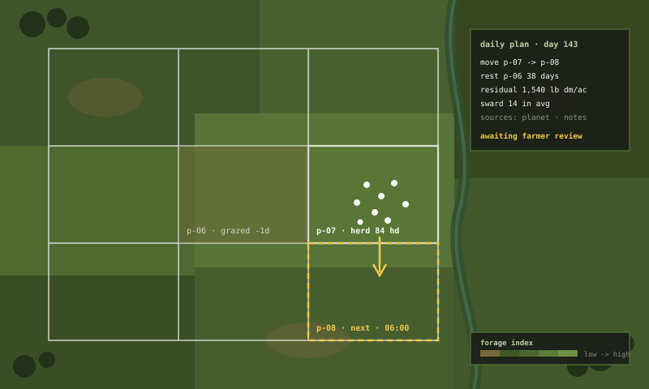

the case for automated land management
OpenPasture is an open-source project building toward automated land management: ruminant herds guided by radio collars, and a decision layer that learns a farm well enough to plan every day's grazing. This document is the argument for why that system should exist, why it must be open, and what we are building first.
01grass is a crop
Pastureland is a perennial crop. It plants itself, waters itself in most climates, fixes its own nitrogen when legumes are present, and photosynthesizes from the first thaw to the last frost. Roughly two-thirds of the world's agricultural land is grassland that cannot grow row crops — too steep, too rocky, too dry. Grass is the only harvest that land will ever yield.
The harvest machinery for that crop already exists, and it is alive. Ruminants convert cellulose humans cannot digest into protein humans can. They mow, they fertilize, and they build more harvesting capacity by reproducing. A cow is machinery that manufactures itself.
But the machinery does not steer itself. Left alone on a big pasture, cattle graze selectively: they bite the sweetest regrowth again and again, ignore the rank patches, and camp near water and shade. The plants they favor get hit before their roots recover; the plants they avoid go rank and choke out the sward. Unmanaged grazing slowly degrades the crop it feeds on.
The difference between degradation and cultivation is not the animal. It is placement and timing — which mouths, on which ground, for how long, and how long that ground rests afterward. Managed this way, grazing is pruning: each defoliation triggers regrowth, root exudation, and litter deposition that rebuild the sward denser than before.
a cow is harvest machinery that builds more of itself. the missing component has always been the steering.
02the practice that works
The steering discipline has a name — rotational, adaptive multi-paddock, management-intensive grazing — and it is one of the best-documented practices in agriculture. Move the herd to fresh ground daily or near-daily, size each allocation to the forage actually standing on it, and give every grazed paddock weeks of recovery before animals return.
The numbers are not subtle. On continuously grazed pasture, animals actually consume 30–40% of the forage grown; the rest is trampled, fouled, or goes rank. Shorten the grazing period and the number climbs: 40–55% on a slow rotation, 55–70% on a fast one, and 60–75% when animals move daily.[1][2] A long-term North Dakota State University comparison of two 320-acre pastures found the rotationally grazed pasture produced the same forage as the continuous one but supported 44% more cow-calf pairs and 17.8 more pounds of beef per acre.[3]
The effects compound below ground. Richard Teague's ranch-scale work in Texas tall grass prairie found that adaptively managed multi-paddock grazing — run at higher stocking rates than its continuously grazed neighbors — carried more soil organic matter, better aggregate stability, higher fungal-to-bacterial ratios, and vegetation dominated by the tall, deep-rooted species that continuous grazing eliminates.[4] Economic modeling of the same systems shows multi-paddock management substantially increasing 30-year net present value, precisely because it sustains higher stocking rates without degrading the base.[5]
More grass harvested per acre, more animals carried per acre, more carbon and water held in the soil — from the same land, the same rain, the same genetics. The practice works.
03the bottleneck is labor
So why does almost nobody do it? USDA data puts some form of rotation on about 40% of cow-calf operations — but intensive systems, the ones that produce the numbers above, on just 16%.[6] The best-documented practice in grazing is also among the least adopted, and the extension literature is blunt about the reason: "many producers conclude that the daily labor rarely justifies the payoff."[6]
Daily movement means daily fence. Fifteen to forty-five minutes per move for an experienced grazier, per herd, every day, in every weather, with no weekends.[6] Jim Gerrish — who wrote the book on management-intensive grazing and has a ranch laid out to make moves as efficient as they can physically be — still spends 25 to 45 minutes every day moving his herd.[7] That is the best case. Missouri Extension documents a producer running 350 cows in seventeen separate groups whose daily moves consumed more than twelve hours of labor.[6] Split the herd, add a paddock, take an off-farm job, get sick for a week — the arithmetic breaks immediately.
This is the same bottleneck that built the feedlot. Confinement did not win because grass failed as a biological system. It won because one worker in a feedyard can manage thousands of animals, and one worker with a reel of polywire can manage a few hundred at most. Cheap grain plus concentrated labor beat free sunlight plus scarce labor. The industry optimized for the scarce input, and the scarce input was people.
agriculture didn't choose confinement because grass failed. it chose confinement because grass didn't scale per person.
Every acre of pasture is a solar collector with a self-replicating harvester standing on it. The only reason that system loses to a feedlot is that the harvester needs a human to walk out and move it every day. Remove that constraint and the equation that built confinement agriculture runs in reverse.
04the machinery exists; the business model is wrong
Here is the remarkable part: the hard hardware problem is already solved. Virtual fencing shipped. Gallagher's eShepherd, Halter, Nofence, and Merck's Vence all sell GPS collars today that steer cattle with an audio cue backed by a mild electric pulse — boundaries drawn on a phone, no wire in the ground.[8] Ranchers use them at commercial scale, on real herds. These companies proved the actuator, and they deserve credit for it.
Then they all reached for the same playbook. Proprietary hardware; software rented back as firmware; a subscription between the farmer and every acre. Halter charges a per-head monthly fee on top of tower infrastructure starting at $4,500. Nofence sells collars at $289–329 each, plus a per-collar monthly subscription, forever. Vence does not sell collars at all — they are leased at $40 per collar per year against a base station that costs $10,000–12,500 installed.[8][9]
The problem is not the price level. It is the structure. Collars from different vendors are not interoperable.[9] The farm's grazing data lives in the vendor's cloud. The software is inseparable from the hardware, so when the subscription stops — or the vendor pivots, or is acquired, or dies — the collar in your hand becomes a plastic brick on a cow's neck. And per-head-per-month pricing means costs scale linearly with the herd forever, which penalizes exactly the operations that would move the most animals onto grass.
Row-crop agriculture has spent a decade fighting this disease in tractor firmware — farmers suing for the right to repair machinery they nominally own. Grazing technology was born with the same disease already installed. A tool that is supposed to regenerate the most durable asset a farmer has — land — should not itself be a depreciating rental.
05the counter-model: open machinery
Our position is that the layers must be separated, and each one opened.
Hardware the farmer owns and repairs. We will design a collar around off-the-shelf components and publish the design. The innovation we are chasing is not a sensor nobody else has — it is a bill of materials anyone can buy, an assembly a farm shop can complete, and a repair that costs a part instead of a replacement unit. The barrier to entry, not the spec sheet, is the product.
Software the community owns. The decision layer — the farm model, the grazing planner, the agent tooling — is open source under AGPL-3.0. That license is already on the repository. Anyone can read how the system decides to move animals, and nobody can enclose an improved version behind an API.
Revenue from hosting, not rent on hardware. We will charge for the parts that are genuinely hard to run — imagery pipelines, model hosting, sync, managed infrastructure — the way open-core infrastructure companies have made durable businesses for two decades. A farm that self-hosts everything pays us nothing and loses nothing.
the company should be optional. that is the design requirement that separates infrastructure from a landlord.
If our hosted service disappeared tomorrow, the design goal is that every collar keeps working, every farm keeps its data, and the software keeps running on a machine in the farmhouse. None of the incumbents can make that promise. It is the only promise that matters over the thirty-year horizon a pasture actually lives on.
06the system we are building
The system has four layers. Data comes in from whatever the farm has; a living model of the land absorbs it; a decision layer turns the model into a daily grazing plan; collars carry the plan out; and the land's response flows back in as tomorrow's data.

The farmer's role in this loop deserves precision, because it is where automation claims usually rot. The goal is not to remove the farmer from the land. It is to remove the fence from the farmer. Today a grazier's daily hour goes into physically re-wiring paddocks; under this system that hour goes into looking at animals and grass, and the looking gets encoded. The system proposes every move; the farmer makes the calls that matter instead of every call, and each correction becomes training signal. A grazier's intuition about their own ground is the most valuable dataset on the farm. The system's job is to learn it, not replace it.
07the animals
A system whose entire function is to put animals on fresh feed every day is a welfare technology before it is anything else. Daily allocation means clean ground, no camping in mud and manure, parasite cycles broken by rest periods, and body condition that shows up in data instead of surprising you at weaning. The welfare argument for this system is not defensive. It is the point: every animal on grass, moved onto the best feed on the farm, every single day.
Virtual fencing earns the caricature question — "an AI that shocks cows?" — so here is the mechanism plainly. Collars cue with sound first. Animals learn the audio boundary within days and turn on the tone; the pulse behind it is mild, rare after training, and far gentler than the electric fencing, cattle prods, and dogs that conventional handling already uses.[9] We will publish our pulse-frequency data per herd as a first-class metric — the design goal is a number that falls toward zero as herds train, and a system that flags any animal for whom it does not.
One more welfare fact, easy to miss: this system puts the farmer's eyes on the herd more, not less. The practitioners this project draws on — the daily-move graziers who proved the practice — built their systems on constant observation of animals and grass. Automation exists to protect that attention, not to substitute for it. The hour that used to go into polywire goes into looking.
08what exists today
This is a manifesto, not a product page, and the honest inventory is short. We are earlier than every company named in section 04. Here is exactly where things stand:
- [x]the agent kit — an open AGPL-3.0 repository: farm domain objects, tool definitions, knowledge ingestion, and agent connector scaffolding. code exists; it is scaffolding toward the harness, not a finished product.
- [x]satellite ingestion prototypes — we pull Planet imagery today and have built prototype map visualizations of real ground from it.
- [x]this argument — the thesis, the sources, and the site you are reading.
- [~]hosted infrastructure — cloud scaffolding (accounts, sync, deployment) exists in a private repo and is not yet open to users.
- [ ]no end-to-end product. no farm runs a working openpasture loop today.
- [ ]no collar hardware. not designed, not prototyped. section 09 explains the sequencing.
- [ ]no autonomy. nothing we have built moves an animal. every capability described in future tense in this document does not exist yet.
What we have that the incumbents do not is the architecture: open source from the first commit, hardware-agnostic by design, and a business model that does not require enclosing the farmer to survive. That is not ahead on capability. It is ahead on the axis we think decides the next thirty years.
09the plan
The sequencing principle: prove the decision layer with humans executing the moves, then plug in the actuators. Software first, telemetry second, hardware third.
the harness now
the agent kit: connect the AI agents farmers already use to farm state, grazing knowledge, and telemetry. the daily loop ships as recommendations — move, stay, or needs-info — with the farmer executing by hand. this proves the decision layer before any hardware exists.
telemetry next
productionize the sensing layer: Planet imagery pipelines, DJI orthomosaic ingestion, pasture sensors and cameras, and integrations with existing collar vendors wherever their systems allow it. the farm model gets its eyes.
the open collar the campaign
design and manufacture the collar: off-the-shelf components, published designs, owner-repairable. this is where groundswell funding comes in — a crowdfunded first production run, built in the open, for the farms the incumbents price out.
the far end later
drones for on-demand imagery. deeper satellite partnerships, and eventually upstream capacity of our own. the sensing layer becomes a utility.
10the ask
Three kinds of people can move this forward right now.
Graziers. If you move animals — daily or wish you could — we want you as a design partner. Your paddock maps, your field notes, your objections. The decision layer gets built against real ground or it is worthless.
Engineers. The agent kit is AGPL and public. Geospatial pipelines, agent tooling, and eventually embedded hardware — if the argument above holds together for you, the repository is where it becomes real.
Everyone else. If you want more animals raised on grass and an open alternative to the lock-in playbook, leave your email below. When the collar campaign happens, you will hear it from us first — and nothing else will be sent to you in the meantime.
##sources
- University of Kentucky Cooperative Extension, AGR-191, "Using a Grazing Stick for Pasture Management" — utilization 30–40% continuous; 40–55% slow rotation; 55–70% fast; 70–80% intensive daily systems.
- University of Kentucky Cooperative Extension, ID-143, "Rotational Grazing" — utilization 60–75% at one-day grazing periods.
- South Dakota Grassland Coalition, "Range 101: Efficiencies of Rotational Grazing" — NDSU long-term 320-acre comparison: +44% cow-calf pairs, +17.8 lb beef/acre, equal forage production.
- Teague et al., 2011, "Grazing management impacts on vegetation, soil biota and soil chemical, physical and hydrological properties in tall grass prairie," Agriculture, Ecosystems & Environment 141.
- Wang et al., "Evaluation of long-term economic and ecological consequences of continuous and multi-paddock grazing" — MP grazing greatly increases 30-year NPV by sustaining higher stocking rates.
- University of Missouri Extension, "Why rotational grazing isn't working" — 15–45 min per move; 40% any rotation / 16% intensive (USDA); 350-cow, 17-group operation at 12+ hours of daily move labor.
- American Cattlemen, "Portable Fencing Facilitates Rotational Grazing" — Jim Gerrish: 500 pairs moved daily, 25–45 minutes per day.
- DTN Progressive Farmer, April 2025, "Virtual Fencing: A Rancher's New Best Friend" — vendor pricing: Halter, Nofence, Vence.
- Rangelands Gateway / Univ. of Arizona, October 2025, "Virtual Fence Vendors for Cattle: Basic Comparison" — collars "generally not interoperable or interchangeable"; audio-cue-first operation; base station and collar economics.
claims in this document that carry no citation are positions, not findings. the utilization and labor figures above are ranges from extension literature; conditions vary by region, forage base, and management. if you find an error, tell us and we will correct it in place.